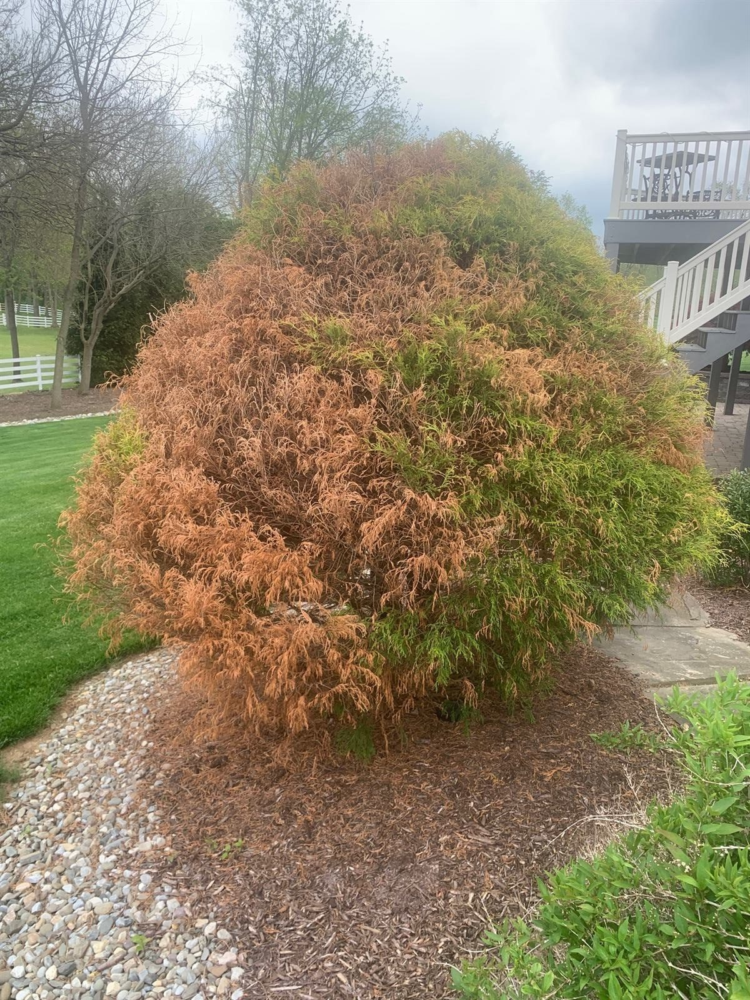

If your Colorado blue spruce is going bare on the lower branches first, working upward, with the interior needles browning and dropping while the tips stay green — that's the signature of Rhizosphaera needle cast, and it's one of the most common calls we get in Central PA. It's treatable. But the timing is everything, and the window is in spring.
Free Diagnosis — Call or Text 717-379-3248Spruce decline in Pennsylvania has at least four common causes and they look similar from the driveway. From two feet away they don't. A close photo of an affected branch, plus one of the whole tree, is usually enough for us to tell you what you're dealing with before anyone comes out. That matters here more than on most jobs, because the treatments are completely different and one of the causes isn't treatable at all.
Pattern: Starts low and inside, moves up and out. Second-year needles turn purple-brown then drop, leaving bare inner branches with a tuft of green at the tip.
Tell: Look along an affected needle with a hand lens — you'll see tiny black dots in neat rows down the length of it. Those are the fungal fruiting bodies, and they're the confirmation.
Treatable: Yes, in spring, protecting new growth. Usually a 2–3 year commitment.
Pattern: A fine yellow-and-bronze stippling across the needles rather than clean browning, sometimes with faint webbing. Worst in hot dry stretches.
Tell: Hold white paper under a branch and tap it hard. If specks fall and then move, you have mites.
Treatable: Yes, and on a completely different schedule and product than needle cast. Misdiagnosing one as the other wastes a season.
Pattern: Whole branches die at once rather than needles thinning gradually. Usually starts low.
Tell: White or bluish resin bleeding along the branch or where it meets the trunk. Unmistakable once you know it.
Treatable: Not really — there's no spray that cures it. Management is pruning out affected wood and reducing stress. We'll tell you that rather than sell you applications.
Pattern: General thinning and off-colour growth all over rather than a bottom-up progression. Often on a tree that's never really thrived.
Tell: Planted too deep, girdling roots, buried root flare, compacted or waterlogged soil, or road salt exposure. Check whether you can see the trunk flare where it enters the ground — if it goes in like a telephone pole, that's a finding.
Treatable: Sometimes, by fixing the site rather than spraying the tree.


Let's be precise, because expectations go wrong here. Fungicide applied correctly in spring protects the emerging needles from being infected. It does not bring back needles that have dropped, and it does not make bare branches refoliate — spruce doesn't produce new buds on old bare wood, so those branches stay bare permanently.
What you get is a tree that stops declining, holds its new growth, and gradually looks better from the top down as healthy years accumulate. On a tree caught reasonably early that's a genuinely good outcome. On a tree that's already lost its bottom half, you're preserving what's left, not restoring it.
It also isn't a one-and-done. Effective management means applications timed to new growth in spring with a follow-up a few weeks later, repeated for two to three consecutive years. Anyone offering a single spray as a cure isn't being straight with you.
Colorado blue spruce is a Rocky Mountain tree. It evolved in cold, dry, high-altitude air, and Central Pennsylvania summers are humid and wet — which is exactly the condition this fungus needs. That mismatch is the real reason half the blue spruces in Dauphin County look the way they do by age twenty.
So if a tree has lost most of its lower structure, or has Cytospora through the scaffold branches, we'll say plainly that treatment isn't a good use of your money. Replacing it with something better adapted to this climate — and we'll talk through options — is frequently the better call. We'd rather tell you that once than bill you for three years of spraying a tree that isn't coming back.
All of the City of Harrisburg (17101–17104, 17109, 17110) plus Penbrook, Paxtang, Steelton, Highspire, Colonial Park, Lower Paxton, Susquehanna Township, and Linglestown. Also Hershey, Hummelstown, Mechanicsburg, Camp Hill, Palmyra, Middletown, Carlisle, and Lebanon.
Free diagnosis, usually within the hour. We'll tell you whether it's needle cast, mites, canker, or a root problem — and if it's a tree that isn't worth treating, we'll tell you that too. Licensed PA pesticide applicator since 2005, fully insured, serving Harrisburg and all of Central PA.
Call or Text 717-379-3248